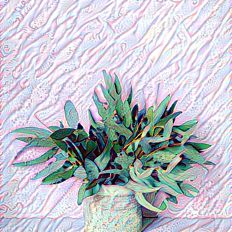
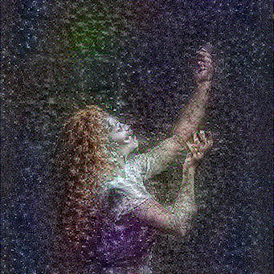
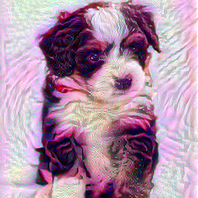
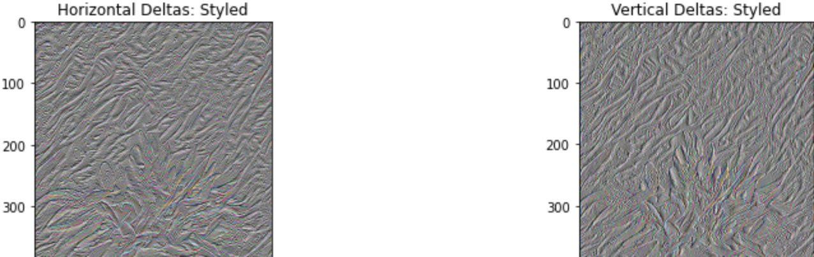
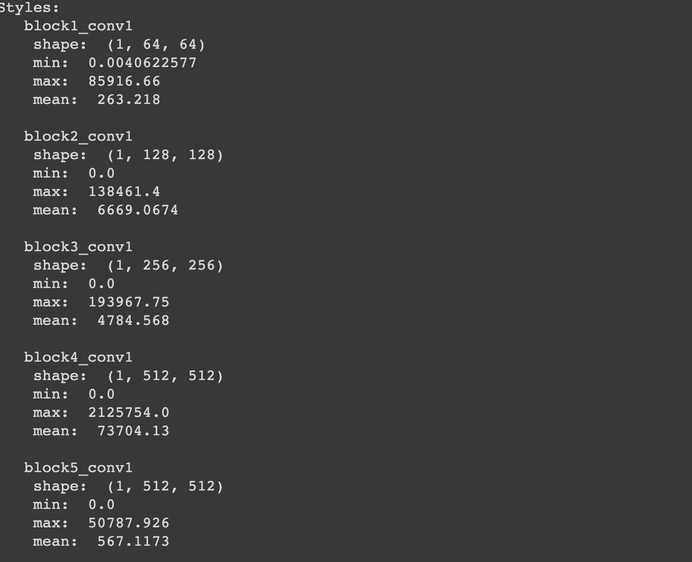

Project
  Can one be a picasso? Can I make the machine learn how to paint in this orginal ideas, can things like expresssionism be reeduced to a series of steps for an algorithm to be made on it? Can we expand persepctives, can we allow people to express them selves in works of a Van gogh?
Woking to improve image using Digital processing and correcting for deltas in the first image
Correction for image parameters
It in volves training the RNN on the style to be transferred, lets say the style of the painting 'scream', and then using multiple epochs to make the generator reduce error of false discrimination to a threshold value. I took a step further because of a lack of computing sources to train the RNNs, I did not have the luxury of investing GPU time on this. What could be the solution? We built a series of such GANs to try on a series sequential basis and on 200 epochs, 10 steps each, a fairly descent trasfer could then be generated using just 3 such sequenced convoluted RNNs
Starting from the network's input layer, the first few layer activations represent low-level features like edges and textures
RNNs work fine since they are very good at feature extraction and converting an image to pixels from where classifiable features can be extracted. I also read paper by Dr Pengtao xie on the reseach on generalised and class based decomposition of images for feature extraction
Now how does one transfer thinking pattern of the painter? It is a tough thing to figure out. We could not solve it ultimately, but considerable improvements were made in the process. What this enabled us shall be visible in the next project on making AI learn music. After doing a bunch of such experiments we were thoroughly convinced that we can make RNNs learn anything, and the obvious step in a lockdown was to make them learn cooking recipes. Make it generate one of its own!
We also did convert one of these to NFT on polygon network!